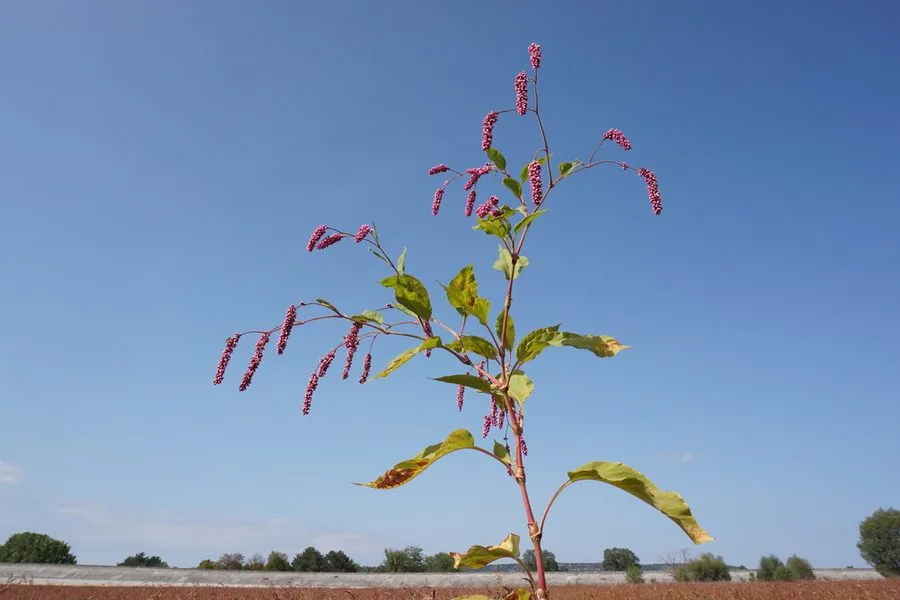

花卉与草本 · 植物界
红蓼 Persicaria orientalis

蓼科一年生草本，粉红色穗状花序低垂如红穗，植株高大，是水边和庭院常见的野趣花卉，原产东亚与澳大利亚。
- 分类
- 门被子植物门纲木兰纲目石竹目科蓼科属蓼属
- 栖息环境
- 东亚与澳大利亚的水边、路旁与荒地，喜光、喜湿
- 地理分布
- 原产东亚与澳大利亚，中国各地水边常见
- 保护级别
- 暂无评估
物种志
红蓼为蓼科蓼属一年生草本，株高 1–2 米，茎直立，多分枝，全株被长毛。叶片宽卵形，长 10–20 厘米，边缘全缘。穗状花序顶生或腋生，长 3–8 厘米，花小，粉红色或白色，花期 6–9 月；果实为瘦果。
红蓼原产东亚和澳大利亚，中国各地水边、路旁和荒地常见，喜阳光充足、温暖湿润的环境，适应性强，常成片生长。它植株高大、粉红色穗状花序低垂如红穗，是水边和庭院中富有野趣的花卉，也可作切花和干花；嫩叶可食，果实和全草可入药。栽培以播种为主，需注意控制其自播蔓延。
形态与习性
- 株高1–2 米，茎多分枝
- 花期6–9 月，穗状花序长 3–8 厘米
- 果期8–10 月，瘦果
- 光照喜充足阳光
- 水分喜湿润，耐浅水
- 土壤疏松肥沃、湿润的壤土
- 繁殖以播种为主，能自播
- 主要用途水边观赏、切花、全草入药
趣味知识
- 红蓼粉红色的穗状花序低垂如红穗，因此得名。
- 它植株高大，常成片生长在水边和荒地。
- 红蓼嫩叶可食，果实和全草可入药。
- 适应性强，种子落地后容易自播蔓延。